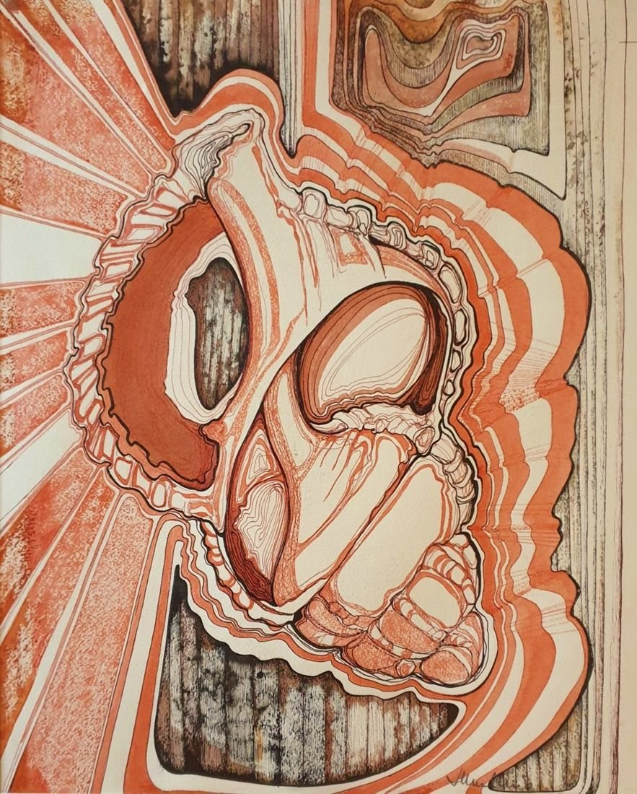
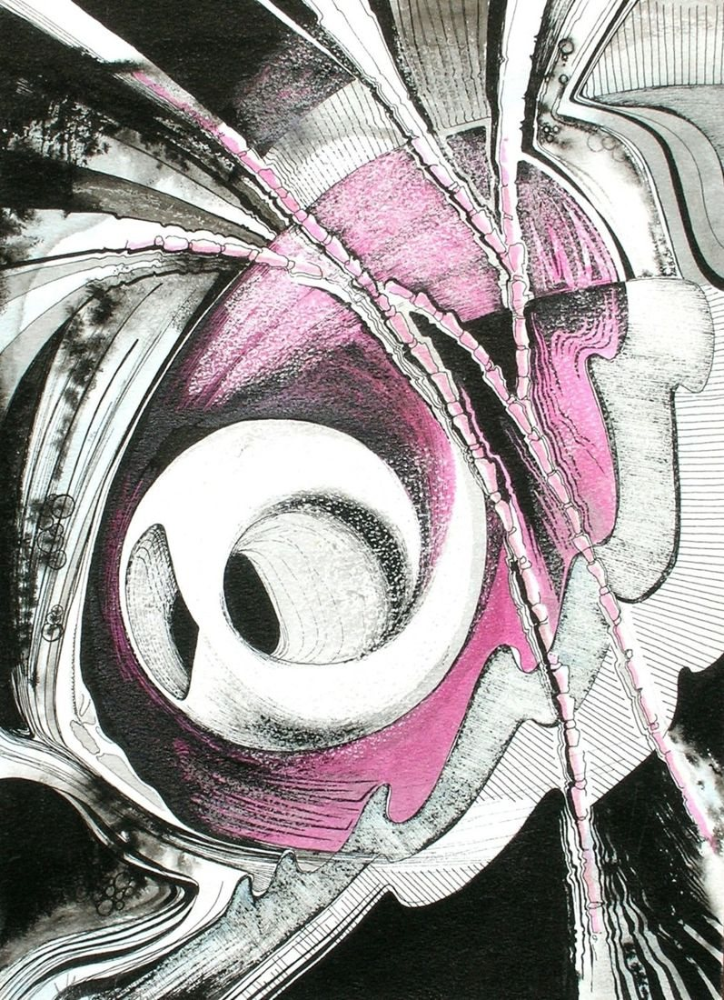
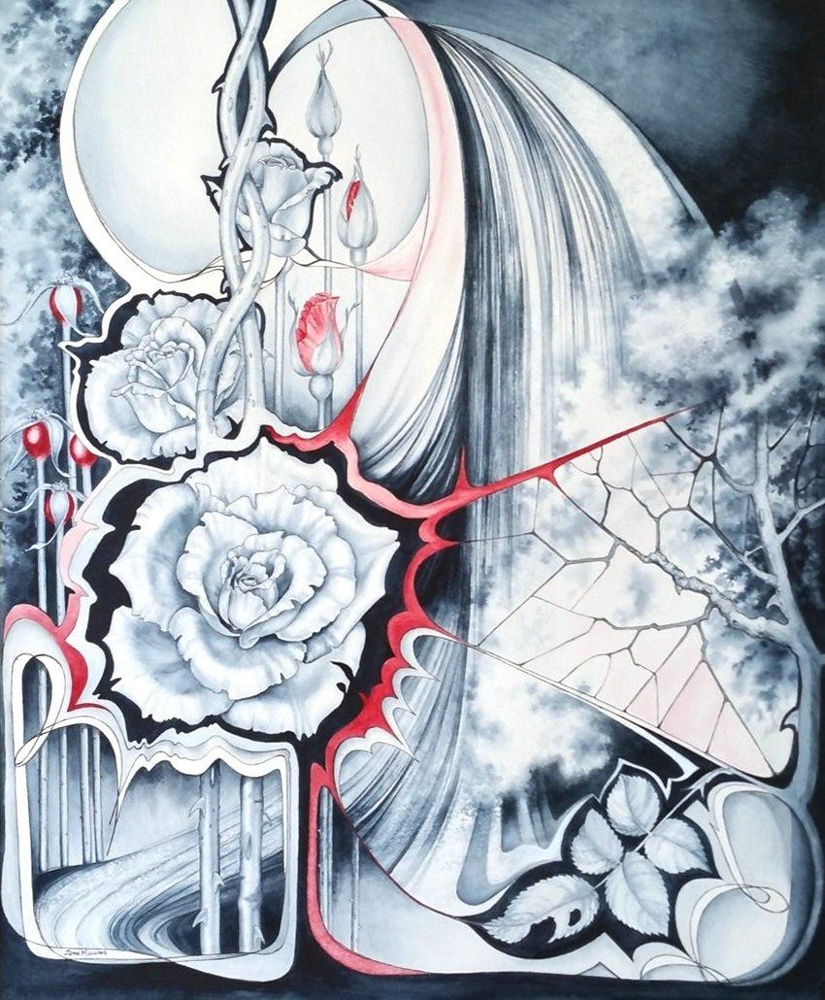
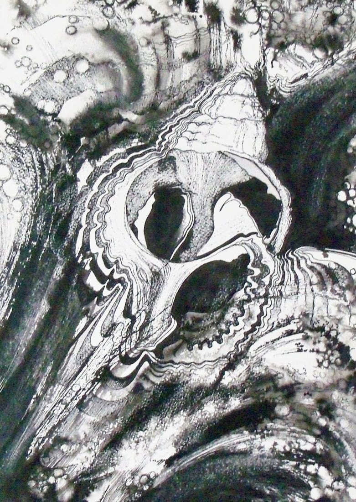

Design in Inks - Brown
- Medium
- Ink and wax on paper
- Size
- 37 × 30 cm
- Year
- 1980s
- Price
- £100
- Catalogue no.
- 10
A design with a shell, in ink, wax and water. One of a series I did exploring the effects of the different mediums.
Watercolours of the imagination · 6 paintings

A design with a shell, in ink, wax and water. One of a series I did exploring the effects of the different mediums.

This began as a study of white lilies, but my love of design moved the interest on to the shape behind the lilies, and then a shape was created within that shape. Apart from ink and watercolour, I used pastel over the top of the background, throwing the central image forward.

This is a vision of a garden, starting with the iris, the moon, then the shape of a statue pouring water. The images repeat at points around the painting.


The idea of all that makes a garden special is here to some extent: roses, water, vegetation, insect life and endless design!
